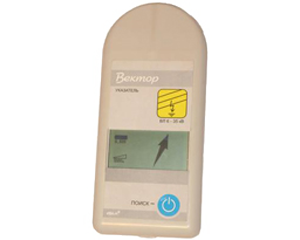
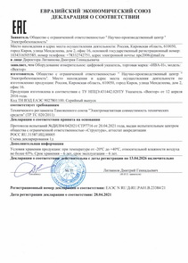

Указатель «Вектор» для определения места однофазного замыкания на землю
Переносной цифровой указатель «Вектор» предназначен для определения места однофазного замыкания на землю (ОЗЗ) в воздушных линиях электропередачи (ВЛ) напряжением 6-35 кВ.
Указатель «Вектор» автоматически производит амплитудный и фазовый анализ широкого гармонического спектра электрического и магнитного полей ВЛ и показывает в итоге не число, как существующие приборы, а стрелкой на ЖК-дисплее направление к месту ОЗЗ.
Применение указателя «Вектор» позволяет ускорить нахождение места ОЗЗ.
Порядок применения указателя "Вектор" смотрите в Руководстве по эксплуатации Вектор и статье «Приборы для определения места ОЗЗ»
Основными достоинствами указателя «Вектор» являются:
- отсутствие переключателей и настроек при измерениях
- наглядное представление результата измерений – направление поиска места ОЗЗ указывается на дисплее прибора в виде плавающей стрелки
- автоматический выбор гармоники для фазового анализа
- автоматическая подстройка чувствительности
Особенности применения
Если поврежденная ВЛ неизвестна, то начинать поиск места ОЗЗ следует с питающей подстанции, на шинах которой появился сигнал «земля в линии». В этом случае последовательно под каждой ветвью ВЛ, отходящей от подстанции, необходимо определить направление поиска по стрелке на дисплее. Если стрелка будет указывать направление поиска на питающую подстанцию, то данная ВЛ не повреждена. Поврежденная ВЛ определяется по направлению поиска от питающей подстанции. Аналогичное определение направления последующего движения нужно производить и в местах разветвления ВЛ.
Двигаясь вдоль поврежденной линии в направлении места ОЗЗ нужно периодически определять направление поиска. Если при последующем измерении направления поиска указатель показывает в сторону места предыдущего измерения, то место ОЗЗ расположено между двумя последними точками измерений. При обходе этого участка следует контролировать изображение на дисплее указателя. Смена направления поиска на обратное будет информировать о месте замыкания на землю.
При использовании переносного указателя «Вектор» не требуется проходить по всей трассе ВЛ. Определить направление к месту ОЗЗ можно в любом месте поврежденной ВЛ. Для сокращения времени поиска определение направления к месту ОЗЗ на первом этапе целесообразно проводить в точках, удобных для подъезда автомобиля ремонтно-технического обслуживания.
Характеристики:
На дисплее указателя так же представляется информация о режиме работы ВЛ (линия под напряжением, линия отключена, в линии ОЗЗ), о мощности измеряемого сигнала и о состоянии элементов питания.